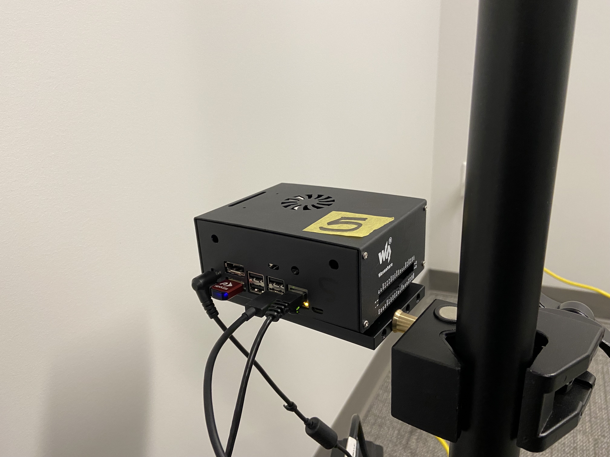

Jetson Xavier NX setup
Each of the Azure Kinect sensors is paired with a Jetson Xavier NX computer.
Each Jetson Xavier NX is preconfigured for the site installation, and no specific configuration is required.
Install a tripod clamp and mounting plate approximately 100 cm (39-3/8 in) from the floor on the two high-mounted sensors. These tripods are indicated by the red circles in the following diagram.

Place one Jetson Xavier NX computer at the base of each tripod. Each Jetson Xavier NX is labeled (NX0 - NX11). Please note the installation location in the preceding image.
Note
Two of the Jetson Xavier NX computers include heavy-duty hook-and-loop fasteners on the bottom of their enclosures. Secure these computers to the mounting plates:
Connect a headless adapter to the HDMI port on each Jetson Xavier NX.
Using a USB-C to USB-A cable, connect each Kinect sensor to a Jetson Xavier NX computer.
Using the other cable in the USB cable bundle, connect each Kinect sensor to an AC adapter.
Use the provided cable wrap to secure the cables to the tripod to provide strain relief for the USB and power cables.
Next, you’ll need to set up the networking components. For information, please see Network setup.
{kind=link}
{kind=link}
{kind=link}